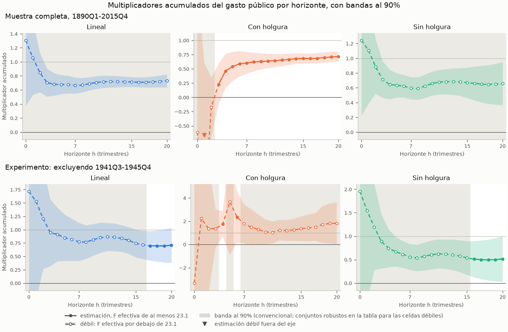

🇬🇧 English · 🇪🇸 Español
Su primer informe fiscal: el multiplicador del gasto, con y sin holgura
Esta página recorre una pregunta completa de política fiscal con datos públicos. Cuando el gobierno de Estados Unidos compra un dólar más de bienes y servicios, ¿cuánto sube el PIB en dos y en cuatro años, y cambia la respuesta cuando la economía tiene holgura? El informe estima las proyecciones locales de un paso de Ramey y Zubairy (2018) sobre sus datos trimestrales de Estados Unidos de 1890-2015, que se distribuyen con puremacro, con las noticias de gasto militar como instrumento. Indica qué cifras puede sostener el instrumento, repite las estimaciones sin la Segunda Guerra Mundial, muestra las dos llamadas que se ejecutan con sus propios datos y explica lo que las cifras no dicen. No hace falta descargar nada aparte del paquete.
1. Instalación
Necesita Python 3.11 o posterior. El informe, y la opción cumulative=True
de las proyecciones locales que usa, son posteriores a puremacro 6.1.0
(véase la sección Unreleased del CHANGELOG). Necesita una versión que los
incluya, o una copia del código fuente:
python -m pip install puremacro # una versión posterior a 6.1.0
python -m pip install . # o, desde una copia del código fuente
2. Ejecución
Un solo comando ejecuta el informe y escribe sus tablas, su figura y su registro:
La misma ejecución desde Python:
from puremacro.examples.first_brief_fiscal import run_brief, summary_text
study = run_brief("fiscal_brief", lang="es")
print(summary_text(study["record"], "es"))
El directorio de salida contiene headline.{md,csv,tex} (las tablas y las
lecturas de abajo), paths.csv (todos los horizontes de 0 a 20),
multipliers.png, headline.json (el registro detrás de esta página) y
manifest.json (versiones del paquete y de las bibliotecas, la cita y el
SHA-256 del archivo de datos, la especificación, las advertencias, los
tiempos y el entorno). Opciones: --exclude INICIO:FIN añade el experimento
de la sección 4, --output DIR fija el directorio (por defecto
fiscal_brief) y --lang en|es el idioma. Con el experimento, el comando
completo tardó unos 2.3 s de tiempo real en un Apple M3 Pro: 0.5 s para
calcular las estimaciones, 0.4 s para escribir los resultados y el resto
para arrancar Python e importar los paquetes.
3. Vista previa: los multiplicadores a dos y cuatro años
El multiplicador en el horizonte h es el PIB adicional sumado en los trimestres t a t+h, por cada dólar de compras adicionales del gobierno sumadas en los mismos trimestres. Dos y cuatro años son h = 7 y h = 15, las ventanas de 8 y 16 trimestres de la Tabla 1 de Ramey y Zubairy. Cada multiplicador se estima en un solo paso: la suma de ventana del PIB se regresa sobre la suma de ventana de las compras, instrumentada con el choque de noticias militares (Ramey 2011), con cuatro rezagos del PIB, de las compras y de las noticias como controles. Hay holgura cuando la tasa de desempleo del trimestre anterior era de al menos 6.5%; con holgura y sin ella, cada coeficiente se estima por separado. Las bandas son al 90%, con varianzas HAC de h + 1 rezagos.
Una celda es débil cuando su F efectiva, la fuerza del instrumento en esa celda, queda por debajo de 23.1, el umbral de Montiel Olea y Pflueger (2013) para un instrumento. La banda convencional de una celda débil no es fiable, así que el informe muestra una celda débil por su conjunto de Anderson-Rubin (1949) al 90%, robusto a instrumentos débiles, marcado con †, y nunca por su estimación puntual. La tabla y la lectura de abajo son la salida congelada de la ejecución por defecto.
| Multiplicador | 2 años (h = 7) | F efectiva | 4 años (h = 15) | F efectiva |
|---|---|---|---|---|
| Lineal | [0.57, 0.83] † | 16.0 | [0.65, 0.81] † | 12.0 |
| Con holgura | 0.60 [0.41, 0.79] | 210.2 | 0.68 [0.59, 0.77] | 105.8 |
| Sin holgura | [0.44, 0.82] † | 7.3 | [0.40, 0.89] † | 10.8 |
| Con holgura menos sin holgura | no fiable | no fiable |
Estimación [banda al 90%]. La diferencia solo se informa donde ningún régimen es débil. † F efectiva por debajo de 23.1: se muestra el conjunto de Anderson-Rubin en lugar de la estimación.

En la figura, las líneas continuas y los puntos rellenos marcan los horizontes en que el instrumento supera el umbral. Las líneas discontinuas, los puntos huecos y el sombreado gris marcan los horizontes débiles: ahí la línea se dibuja solo como referencia, y la cifra que se cita es el conjunto de Anderson-Rubin. La fila superior es la muestra completa; la inferior, el experimento de la sección 4.
Los multiplicadores son dólares de PIB por dólar de compras del gobierno, ambos acumulados en el horizonte. Lineal: débil a 2 años (F efectiva 16.0, umbral 23.1), con un conjunto al 90% robusto a instrumentos débiles de 0.57 a 0.83; débil a 4 años (F efectiva 12.0, umbral 23.1), con un conjunto al 90% robusto a instrumentos débiles de 0.65 a 0.81. Con holgura: 0.60 a 2 años (banda al 90%: 0.41 a 0.79); 0.68 a 4 años (banda al 90%: 0.59 a 0.77). Sin holgura: débil a 2 años (F efectiva 7.3, umbral 23.1), con un conjunto al 90% robusto a instrumentos débiles de 0.44 a 0.82; débil a 4 años (F efectiva 10.8, umbral 23.1), con un conjunto al 90% robusto a instrumentos débiles de 0.40 a 0.89. La comparación de los multiplicadores con y sin holgura no es fiable en ninguno de los dos horizontes, porque en cada uno al menos un régimen es débil. Con holgura: un solo trimestre, 1941Q4, concentra el 52% de la variación residual del instrumento en ambos horizontes. Sin holgura: un solo trimestre, 1950Q3, concentra el 36% de la variación residual del instrumento en ambos horizontes.
Cómo leerla: en la muestra completa, todas las bandas y todos los conjuntos robustos quedan entre 0 y 1, con holgura y sin ella. Al 90%, los datos descartan tanto un multiplicador nulo como uno igual a uno, a dos y a cuatro años: un dólar más de compras vino con menos de un dólar más de PIB, así que el resto del PIB (el gasto privado y las exportaciones netas) cayó al subir las compras. El instrumento solo es fuerte con holgura, desde h = 3. En el modelo lineal y sin holgura queda por debajo del umbral en todos los horizontes, así que el informe no puede contrastar si la holgura cambia el multiplicador. Con holgura, un solo trimestre, 1941Q4, cuando Estados Unidos entró en la Segunda Guerra Mundial, concentra cerca de la mitad de la variación residual del instrumento; por eso la sección siguiente quita la guerra.
4. Un experimento: sin la Segunda Guerra Mundial
python -m puremacro.examples.first_brief_fiscal --exclude 1941Q3:1945Q4 --lang es --output fiscal_brief_sin_guerra
La Segunda Guerra Mundial es el mayor episodio de gasto de los datos, y sus
noticias incluyen el mayor choque de la muestra, en 1941Q4. Ramey y Zubairy
(2018, p. 867) excluyen 1941Q3-1945Q4: dejan fuera las observaciones en que
la variable dependiente, el choque o las variables de control rezagadas caen
en ese periodo. El informe aplica la misma regla. El PIB, las compras y las
noticias pasan a faltar en el periodo, se conservan todas las filas, los
controles rezagados se reconstruyen a partir de las series enmascaradas y las
sumas de ventana arrastran el hueco. Un trimestre sale de la muestra, por
tanto, cuando su ventana, su choque o alguno de sus rezagos tocan la guerra:
con h = 7, todos los trimestres de 1939Q4 a 1946Q4. Los dos trimestres que
nombra --exclude quedan excluidos.
Junto a las cifras de cada régimen, la lectura informa un diagnóstico de concentración. En las filas que usa un régimen en un horizonte principal, el choque de noticias se regresa sobre una constante y los controles. El diagnóstico es la mayor participación de un solo trimestre en los residuos al cuadrado, con su fecha, y se informa cuando la participación es de al menos 25%. Con residuos normales y muestras por régimen de estos tamaños (de 153 a 313 trimestres), el mayor trimestre concentra más del 10% en menos de una muestra de cada cien. Una participación de 25% o más indica, por tanto, que un solo episodio concentra buena parte de la variación que identifica el multiplicador del régimen.
| Multiplicador | 2 años (h = 7) | F efectiva | 4 años (h = 15) | F efectiva |
|---|---|---|---|---|
| Lineal | [0.54, 2.04] † | 4.8 | [0.50, 1.07] † | 19.6 |
| Con holgura | [0.07, 3.61] † | 20.8 | (-∞, -55.98] ∪ [0.56, ∞) † | 3.2 |
| Sin holgura | [0.25, 1.00] † | 5.7 | [0.18, 0.90] † | 22.3 |
| Con holgura menos sin holgura | no fiable | no fiable |
Estimación [banda al 90%]. La diferencia solo se informa donde ningún régimen es débil. † F efectiva por debajo de 23.1: se muestra el conjunto de Anderson-Rubin en lugar de la estimación.
Excluyendo 1941Q3-1945Q4: se descarta todo trimestre cuya ventana, choque o rezagos tocan el periodo, como hacen Ramey y Zubairy con la Segunda Guerra Mundial. Los multiplicadores son dólares de PIB por dólar de compras del gobierno, ambos acumulados en el horizonte. Lineal: débil a 2 años (F efectiva 4.8, umbral 23.1), con un conjunto al 90% robusto a instrumentos débiles de 0.54 a 2.04; débil a 4 años (F efectiva 19.6, umbral 23.1), con un conjunto al 90% robusto a instrumentos débiles de 0.50 a 1.07. Con holgura: débil a 2 años (F efectiva 20.8, umbral 23.1), con un conjunto al 90% robusto a instrumentos débiles de 0.07 a 3.61; débil a 4 años (F efectiva 3.2, umbral 23.1), y su conjunto al 90% robusto a instrumentos débiles no está acotado: los datos no pueden acotarlo. Sin holgura: débil a 2 años (F efectiva 5.7, umbral 23.1), con un conjunto al 90% robusto a instrumentos débiles de 0.25 a 1.00; débil a 4 años (F efectiva 22.3, umbral 23.1), con un conjunto al 90% robusto a instrumentos débiles de 0.18 a 0.90. La comparación de los multiplicadores con y sin holgura no es fiable en ninguno de los dos horizontes, porque en cada uno al menos un régimen es débil. Con holgura: un solo trimestre, 1961Q2, concentra el 41% de la variación residual del instrumento a 2 años y el 48% a 4 años. Sin holgura: un solo trimestre, 1950Q3, concentra el 49% de la variación residual del instrumento en ambos horizontes. Ninguna estimación principal supera el umbral en esta muestra, así que ninguna se compara con la muestra completa. Los valores sin la Segunda Guerra Mundial de la Tabla 3 de Ramey y Zubairy son estimaciones en tres pasos (respuestas al impulso sumadas); las del informe son de un paso, así que no tienen por qué coincidir.
Cómo leerla: sin la guerra, ninguna celda principal supera el umbral, así que cada cifra de la tabla es un conjunto robusto a instrumentos débiles, y la mayoría de los conjuntos son mucho más anchos que en la muestra completa. Con holgura a cuatro años, los datos no pueden acotar el multiplicador en absoluto. Ramey y Zubairy (2018, p. 876) también encuentran que, sin la guerra, todos sus conjuntos de instrumentos parecen débiles en el estado de desempleo alto más allá de dos años. Estos conjuntos no pueden mostrar que el multiplicador sea mayor con holgura una vez excluida la guerra, y la identificación vuelve a apoyarse en episodios aislados: 1961Q2 con holgura y 1950Q3, la movilización de la guerra de Corea, sin holgura.
5. Sus propios datos
El informe son dos llamadas a las proyecciones locales de puremacro con
cumulative=True. El bloque de abajo las hace sobre los datos incluidos
exactamente como las haría usted sobre su propio marco trimestral: reemplace
df por el suyo. También excluye un periodo con la regla de Ramey y Zubairy.
from puremacro.examples.ramey_zubairy_2018_multipliers import RZ_CONTROLS, load_rz_data
from puremacro.lp import lp_iv, lp_state_dep_iv
df = load_rz_data() # trimestral, 1890Q1-2015Q4, se conservan todas las filas
# Excluir un periodo con la regla de Ramey y Zubairy: y, g y el instrumento pasan a NaN
# en 1941Q3-1945Q4, las filas se quedan y se reconstruye cada columna de rezagos.
no_war = df.drop(columns=["cumy", "cumg"]) # sumas acumuladas antes de enmascarar
quarter = no_war.index.to_period("Q")
no_war.loc[(quarter >= "1941Q3") & (quarter <= "1945Q4"), ["y", "g", "newsy"]] = float("nan")
for name in RZ_CONTROLS: # "g_l2" es g dos trimestres antes
series, lag = name.rsplit("_l", 1)
no_war[name] = no_war[series].shift(int(lag))
for label, frame in (("Muestra completa", df), ("Sin 1941Q3-1945Q4", no_war)):
linear = lp_iv(frame, y="y", x="g", z="newsy", horizons=[7, 15], n_lags=0,
controls=RZ_CONTROLS, cumulative=True, anderson_rubin=True)
state = lp_state_dep_iv(frame, y="y", x="g", z="newsy", state="slack_l",
horizons=[7, 15], n_lags=0, controls=RZ_CONTROLS,
transition="threshold", threshold=0.5, cumulative=True)
# Una celda es débil cuando su F efectiva (mop_f; first_stage_f_H y first_stage_f_L
# por régimen) queda por debajo de mop_cv_10: cite su conjunto de Anderson-Rubin, no su beta.
print(label)
print(linear[["mop_f", "mop_cv_10", "beta", "lo", "hi", "ar_lo", "ar_hi", "ar_set_type"]].round(2))
print(state[["first_stage_f_H", "beta_H", "lo_H", "hi_H",
"first_stage_f_L", "beta_L", "lo_L", "hi_L"]].round(2))
Lo que necesita su marco, y lo que suponen las llamadas:
- Un índice trimestral regular, con todas las filas. Las sumas de ventana
necesitan trimestres consecutivos, así que
cumulative=Truerechaza un índice de fechas o de periodos con un hueco. No elimine filas con valores faltantes: en cada horizonte los estimadores omiten las filas cuya ventana, instrumento, estado o controles faltan. - La escala de Gordon y Krenn.
yygson el PIB real y las compras reales del gobierno, ambos divididos por la misma estimación de tendencia del PIB real potencial (Gordon y Krenn 2010); Ramey y Zubairy ajustan un polinomio de sexto grado al logaritmo del PIB real, dejando fuera 1930-1946. En unidades comunes, el coeficiente es directamente dólares de PIB por dólar de compras. En logaritmos sería una elasticidad que necesita un factor de conversión, el promedio muestral del PIB sobre las compras, y Ramey y Zubairy muestran que, en su muestra larga, esa conversión sesga el multiplicador hacia arriba. El choque de noticias se escala igual: las noticias nominales divididas por el PIB potencial nominal del trimestre anterior (el deflactor del PIB por el PIB real potencial). - Controles.
n_lags=0con las columnas de rezagos explícitas deRZ_CONTROLS(cuatro rezagos dey,gynewsy) reproduce los controles de Ramey y Zubairy. Mantenga el primer rezago dey(y_l1) entre ellos: así el coeficiente coincide con su forma en suma del PIB (vea Proyecciones Locales, "Multiplicadores acumulados"). - Lo que debe cumplir el instrumento. Debe ser relevante: mueve las
compras en la ventana. Revise la F efectiva en cada horizonte (
mop_f) y por régimen (first_stage_f_H,first_stage_f_L); por debajo demop_cv_10(23.1 con un instrumento) la banda no es fiable y la cifra que se cita es el conjunto de Anderson-Rubin. Debe ser exógeno: sin relación con las demás fuerzas que mueven el PIB, en la fecha del choque y antes y después de ella, una vez incluidos los controles. La relevancia se puede medir; la exogeneidad no, y se argumenta a partir de cómo se construye la serie. Las noticias militares registran cambios en el gasto de defensa esperado debidos a acontecimientos políticos y militares (Ramey 2011). - El estado se fecha en t-1. Cada trimestre se clasifica por el estado de
la economía antes del choque:
slack_lvale 1 cuando la tasa de desempleo del trimestre anterior era de al menos 6.5%. A partir de su propia tasa,(df["unemp"] >= 6.5).astype(float).where(df["unemp"].notna()).shift(1)conserva como faltante una tasa faltante en lugar de leerla como "sin holgura". El estado es un indicador 0/1, así quethreshold=0.5lo separa, y cada coeficiente es propio de cada régimen por defecto (interact="all"). - Excluir un periodo. Como en el bloque: ponga
y,gy el instrumento en NaN en el periodo, conserve las filas y reconstruya cada columna de rezagos a partir de las series enmascaradas. No reutilice nunca sumas acumuladas calculadas antes de enmascarar (cumyycumgen el marco incluido). Así, un trimestre sale del horizonte h cuando su ventana, su choque o alguno de sus rezagos tocan el periodo. - El conjunto de Anderson-Rubin de un régimen.
lp_state_dep_ivinforma bandas y F por régimen, pero ningún conjunto de Anderson-Rubin. El informe toma el conjunto de cada régimen delp_iv(..., anderson_rubin=True)sobre un marco cuyo instrumento es NaN fuera del régimen, por ejemploframe.assign(newsy=frame["newsy"].where(frame["slack_l"] == 0))para sin holgura (vea la sección 6). - Sin un choque narrativo: la vía de Blanchard y Perotti. Si no existe
una serie de noticias para su economía, la alternativa habitual sigue a
Blanchard y Perotti (2002): la parte de las compras corrientes que los
controles rezagados no predicen se trata como un choque. Regrese
gsobre una constante y los rezagos deyyg, y pase el residuo comoz, sin rezagos de noticias entre los controles. Esto añade un supuesto que la serie de noticias no necesita: las compras no responden a la economía dentro del trimestre, porque los presupuestos tardan en decidirse y ejecutarse. Su punto débil es la anticipación: Ramey (2011) muestra que el gasto militar suele conocerse trimestres antes de ejecutarse. Ramey y Zubairy encuentran este choque relevante en horizontes cortos y a menudo débil pasados uno o dos años.
Ejecución reutilizable con otros datos trimestrales
compute_brief, run_brief y la interfaz de línea de comandos aceptan series
trimestrales propias mediante FiscalBriefConfig (o un archivo JSON) sin
editar el código de la librería. Las fechas pueden venir en formato ISO
(1995-01-01), trimestres en inglés (1995Q1) o en español (1995T1). La
identificación causal nunca se infiere por el nombre de las columnas: debe
indicarse una columna de instrumento externo
(shock_mode="external_instrument", instrument="...") o elegir de forma
explícita shock_mode="blanchard_perotti". Cuando los trimestres efectivos en
los horizontes principales quedan por debajo de SHORT_SAMPLE_OBS (120) o
SHORT_REGIME_OBS (40), el informe registra sample_guard, guarda la
advertencia en manifest.json e incluye una nota de cautela por muestra corta.
El siguiente bloque ejecuta el informe lineal acumulado para Alemania (DEU,
1995Q1-2026Q1) a partir del snapshot incluido de cuentas nacionales
trimestrales de la OCDE (qna40_panel.csv) con escalamiento HP de
Gordon-Krenn:
from pathlib import Path
import warnings
import puremacro
from puremacro.examples.first_brief_fiscal import FiscalBriefConfig, compute_brief
qna_csv = Path(puremacro.__file__).resolve().parent / "replication" / "data" / "qna40_panel.csv"
cfg = FiscalBriefConfig(
filter_col="code",
filter_value="DEU",
date_col="date",
outcome="gdp_real",
policy="cons_gov_real",
shock_mode="blanchard_perotti",
scaling="hp_trend",
state=None,
headline_horizons=(3, 7),
horizons=tuple(range(13)),
citation="Snapshot OCDE QNA (DEU, 1995Q1-2026Q2)",
units_es="Los multiplicadores son euros de PIB real por euro de consumo público real en el horizonte.",
)
with warnings.catch_warnings():
warnings.simplefilter("ignore", UserWarning)
deu_record, deu_paths = compute_brief(data=qna_csv, config=cfg)
assert deu_record["data"]["file"] == "qna40_panel.csv"
assert deu_record["full"]["sample_guard"]["short_sample"] is True
Desde la terminal (o pasando --config config.json):
python -m puremacro.examples.first_brief_fiscal \
--data mis_datos_fiscales.csv \
--date-col trimestre \
--outcome pib_real \
--policy gasto_real \
--instrument choque_narrativo \
--scaling hp_trend \
--state desempleo --state-lag 1 --state-op ">=" --state-threshold 7.5 \
--citation "Cuentas Nacionales y Choque Fiscal Narrativo" \
--lang es --output informe_fiscal_es
6. Supuestos y límites
- Datos históricos de Estados Unidos dominados por guerras. La muestra es 1890-2015, y los mayores choques de noticias vienen de la Primera Guerra Mundial, la Segunda Guerra Mundial y la guerra de Corea. Los multiplicadores los determinan esos episodios y las compras de defensa que siguieron a las noticias; trasladarlos a otro gasto, a otro país o al presente es un supuesto.
- Relevancia y exogeneidad del instrumento. La relevancia se mide, horizonte por horizonte y régimen por régimen, con la F efectiva. La exogeneidad se supone: las noticias militares deben mover el PIB solo a través de las compras. El racionamiento de guerra, las restricciones de capacidad, el reclutamiento o los impuestos anunciados con las mismas noticias la romperían; Ramey y Zubairy excluyen la Segunda Guerra Mundial para comprobar si el racionamiento y las restricciones de capacidad determinan sus resultados.
- Instrumentos débiles por horizonte y régimen. En la muestra completa el instrumento solo es fuerte con holgura, desde h = 3; sin la Segunda Guerra Mundial es débil en todas las celdas principales. Una celda débil se informa por su conjunto de Anderson-Rubin, cuya cobertura no depende de la fuerza del instrumento, a cambio de ser más ancho; un conjunto no acotado significa que los datos no pueden acotar el multiplicador. La Figura 4 de Ramey y Zubairy (p. 868) muestra el mismo patrón para las noticias militares en la muestra completa: por debajo del umbral en todos los horizontes en el modelo lineal y con desempleo bajo, y por encima con desempleo alto después de los primeros trimestres.
- Momento del estado. El estado se fecha antes del choque (el desempleo en t-1), así que el choque no puede mover el estado que lo clasifica. Aun así, el estado depende de choques anteriores. Gonçalves, Herrera, Kilian y Pesavento (2024) muestran que, cuando el estado depende de choques macroeconómicos, las proyecciones locales dependientes del estado solo recuperan la respuesta condicional a un choque infinitesimal, no la respuesta a choques mayores; en sus simulaciones, los multiplicadores fiscales pueden desviarse hasta 40 por ciento. Los choques de noticias detrás del régimen con holgura incluyen el mayor de la muestra, así que lea los multiplicadores por régimen como respuestas a cambios pequeños de las compras.
- Los conjuntos de Anderson-Rubin por régimen son una aproximación.
Vienen de regresiones enmascaradas por régimen:
lp_ivcon el instrumento como faltante fuera del régimen. Las estimaciones son idénticas a las del régimen, pero las sumas HAC tratan como vecinos los trimestres no contiguos de un régimen, así que el conjunto se parece al de la regresión conjunta, pero no es igual. - Ancho de banda. Los errores estándar de Ramey y Zubairy usan un ancho de banda HAC automático (su nota 17), mientras que el informe usa h + 1 rezagos para las bandas, la F efectiva y los conjuntos de Anderson-Rubin por igual. Por eso solo se comparan las estimaciones puntuales con sus tablas: con h = 7 y 15, las estimaciones del informe en la muestra completa coinciden con su Tabla 1 a dos decimales en todas las celdas; esto comprueba la replicación y no convierte en citables las estimaciones puntuales de las celdas débiles.
- Un paso, no tres. Los valores sin la Segunda Guerra Mundial de la Tabla 3 de Ramey y Zubairy son estimaciones en tres pasos, respuestas al impulso sumadas (su nota 26), mientras que las del informe son de un paso. Los dos métodos coinciden solo cuando todas las regresiones usan la misma muestra (su nota 14), y la exclusión lo impide, así que el experimento no se compara con su Tabla 3.
- Unidades. Los multiplicadores son dólares de PIB por dólar de compras del gobierno, ambos acumulados en los trimestres t a t+h: un multiplicador integral, no el cociente entre la respuesta máxima del PIB y el choque inicial de gasto, la definición de Blanchard y Perotti (2002).
- No es un multiplicador de impuestos ni una comparación de financiamiento. El informe mide las compras de bienes y servicios del gobierno, no las transferencias ni los cambios de impuestos, y no separa cómo se pagaron las compras: el gasto de guerra vino con impuestos, deuda y racionamiento en proporciones que la estimación promedia. No dice nada sobre financiar con deuda frente a hacerlo con impuestos.
7. Cómo citar
Si publica resultados calculados con los datos incluidos, cite el artículo y los datos:
Ramey, V. A. & Zubairy, S. (2018). Government Spending Multipliers in Good Times and in Bad: Evidence from US Historical Data. Journal of Political Economy, 126(2), 850-901. https://doi.org/10.1086/696277
Los datos son un snapshot congelado de las series trimestrales del archivo de
replicación de Valerie Ramey para ese artículo
(Ramey_Zubairy_replication_codes.zip, en su
página de investigación),
incluido como puremacro/replication/data/rz2018.csv; el manifest.json de
cada ejecución registra su SHA-256. Para citar puremacro, use los metadatos
de CITATION.cff en el repositorio.
Otras obras en las que se apoya esta página:
- Anderson, T. W. & Rubin, H. (1949). Estimation of the Parameters of a Single Equation in a Complete System of Stochastic Equations. The Annals of Mathematical Statistics, 20(1), 46-63. https://doi.org/10.1214/aoms/1177730090
- Blanchard, O. & Perotti, R. (2002). An Empirical Characterization of the Dynamic Effects of Changes in Government Spending and Taxes on Output. The Quarterly Journal of Economics, 117(4), 1329-1368. https://doi.org/10.1162/003355302320935043
- Gonçalves, S., Herrera, A. M., Kilian, L. & Pesavento, E. (2024). State-dependent local projections. Journal of Econometrics, 244(2), 105702. https://doi.org/10.1016/j.jeconom.2024.105702
- Gordon, R. & Krenn, R. (2010). The End of the Great Depression 1939-41: Policy Contributions and Fiscal Multipliers. NBER Working Paper 16380. https://doi.org/10.3386/w16380
- Montiel Olea, J. L. & Pflueger, C. (2013). A Robust Test for Weak Instruments. Journal of Business & Economic Statistics, 31(3), 358-369. https://doi.org/10.1080/00401706.2013.806694
- Ramey, V. A. (2011). Identifying Government Spending Shocks: It's All in the Timing. The Quarterly Journal of Economics, 126(1), 1-50. https://doi.org/10.1093/qje/qjq008